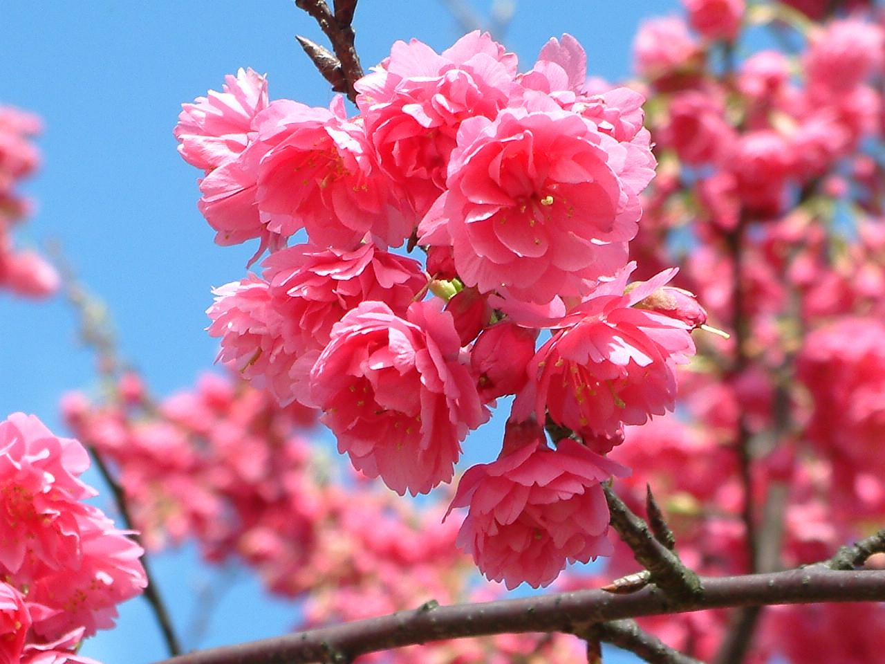

河津櫻 是日本一種早開的櫻花品種，以鮮豔的粉紅色花朵和較長的開花期聞名。通常在每年 2 月上旬至 3 月上旬盛開，比染井吉野櫻等常見品種更早。河津櫻由大島櫻與寒緋櫻自然交配而成,花瓣較大且呈深粉紅色。1955 年，它在靜岡縣賀茂郡河津町被偶然發現，因此命名為「河津櫻」。此品種的花色多呈桃粉紅色，且每年 2 月上旬開始綻放，花期可持續約一個月，使人們能在初春便欣賞到櫻花的美景。

八重櫻 日語（やえざくら）是重瓣櫻花的統稱，並非特定的品種名稱，其種類繁多，其中較為常見的包括關山櫻、普賢象櫻、八重紅枝垂櫻等。這類櫻花的花瓣層疊，數量超過五枚，有些甚至細密如菊花，因此也被稱為菊櫻。根據資料，八重櫻涵蓋許多不同的櫻花品種，例如關山櫻與普賢象櫻，其中菊櫻則因其花瓣極多且細緻，形狀類似菊花而得名。相較於染井吉野櫻，八重櫻的開花時間較晚，花期也較長，使人們在染井吉野櫻凋謝後仍能繼續欣賞春日的櫻花美景。
山櫻花 又稱緋寒櫻，是壽命僅次於江戶彼岸櫻的第二長壽品種，但從發芽到開花所需時間相當長。其花朵為中型單瓣櫻，每朵擁有五枚淡紅色花瓣，花朵數量較少，花期約在 3 月下旬至 4 月中旬，並與紅褐色新葉的發芽同步開花，與「先開花後長葉」的染井吉野櫻截然不同。在日本，山櫻是原生且常見的櫻花品種，廣泛分布於山區，尤其在關東、中部及南部地區。它以開花時同時長出葉子的特點，以及豐富的花色變化而聞名，花色包含白色、淡粉色、深粉色，甚至部分花朵頂端呈深色。山櫻花在日本文化中具有重要地位，自古以來便是和歌與詩歌中讚頌的對象，被視為櫻花之祖，承載著深厚的歷史與文化意義。

吉野櫻 學名 Prunus_yedoensis,又稱東京櫻花或日本櫻花，是一種高大樹木，可達 10 至 15 公尺，開花時呈淡粉紅色，花瓣為單瓣，通常 4 至 5 朵形成總狀花序。萼片、花梗及小花柄上覆有細毛，萼筒上部較細，花蕾呈粉紅色，在葉子長出前便盛開，花色略帶淡紅，完全綻放時逐漸轉白。染井吉野櫻喜愛較涼爽的氣候，在低海拔地區較不易栽種，其中阿里山森林遊樂區為台灣種植最為密集之地，其花期約在 3 至 4 月，三月中旬開始含苞待放，至三月底進入盛開期，為最佳觀賞時機。吉野櫻是日本最普遍的櫻花品種,普遍認為它是由日本原生種大島櫻 (Prunus speciosa) 與江戶彼岸櫻 (Prunus subhirtella) 雜交而成，並分別繼承了花朵較大及先花後葉的特性。此品種栽培歷史悠久，也是日本在海外移植最多的櫻花，象徵意義深厚，廣受喜愛，被視為極具代表性的觀賞植物。